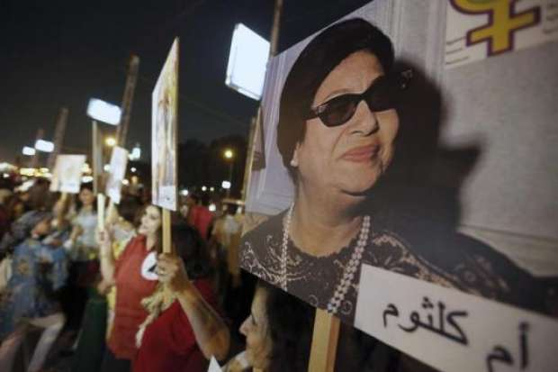
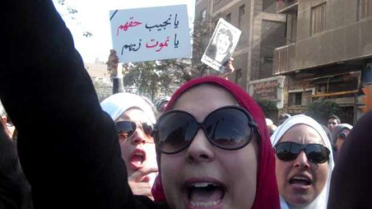
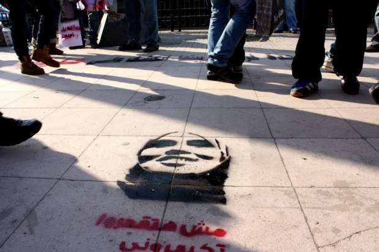
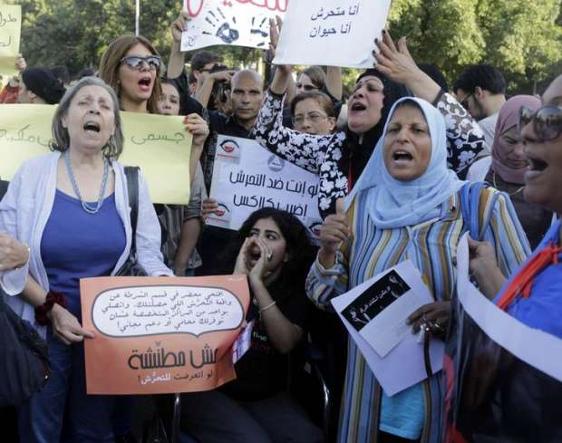
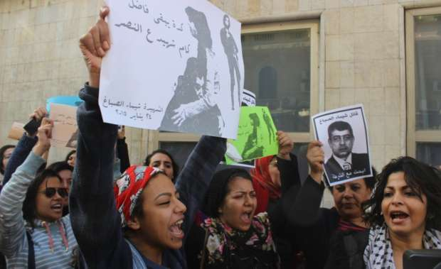
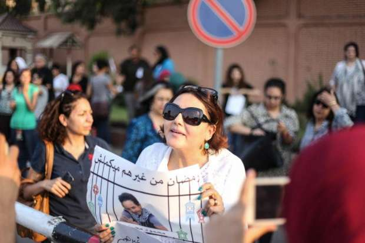
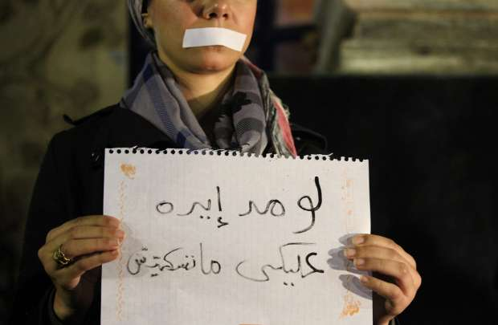

أحدث الأخبار
- الزمالك يكتسح رينجرز النيجيري بأربعة أهداف مقابل هدف وحيد
- القضاء الإداري يقضي بحل اتحاد الكرة وبطلان الانتخابات الأخيرة
- مقتل 3 أشخاص وإصابة 3 آخرين في حادث مروري بالبحيرة
- وزير الخارجية يجري اتصالاً مع رئيس المجلس الرئاسي الليبي
- عاصمة مصر تتجه لزيادة سكانية نصف مليون العام الجاري
- باولو يقود هجوم الزمالك أمام رينجرز في دوري الأبطال
- المالية تعفي المطاعم غير السياحية من ضريبة القيمة المضافة بشروط
- "القضاء الإداري" يلزم الجامعة الأمريكية بتحصيل مصروفاتها بالجنيه المصري
من مواجهة الاحتلال للثورة على الرجل.. أشهر مظاهرات قادتها المصريات
وقفة نسائية احتجاجا على مقتل الناشطة شيماء الصباغ- تصوير أحمد حامد- أصوات مصرية
بلافتات من القماش الأسود تحمل شعارات "ليحيا ناصرو العدل والحرية"، "ليسقط الظالمون المستبدون"، مكتوبة باللغتين العربية والفرنسية، سارت نحو 300 سيدة في أول مظاهرة نسائية في تاريخ مصر الحديث، يوم 16 مارس 1919.
اختير هذا اليوم، الذي خرجت فيها النساء تحت قيادة رائدة النهضة النسائية المصرية هدى شعراوي للتنديد بسقوط أول شهيدة مصرية في ثورة 19، ليكون يوم المرأة المصرية من كل عام.

وطافت سيدات مصر بالسفارات للإعلان عن احتجاجهن على "تصرفات الإنجليز إزاء ما أصابوا به المصريين من قتل وتنكيل"، كما تقول هدى شعراوي في مذكراتها التي نشرت عام 1976.
وقتلت حميدة خليل أثناء مشاركتها في مظاهرة مطالبة برحيل الإنجليز عن مصر، أمام مسجد الحسين، لتكون أول شهيدة في ثورة 1919.
مظاهرة بيت الأمة
وقامت النساء بمظاهرة ثانية يوم 20 مارس، انطلقت من منزل زوجة أحمد بك أبو إصبع بجاردن سيتي، واتجهت نحو بيت الأمة (منزل سعد زغلول).
وتصف هدى شعراوي ما جرى في ذلك اليوم في مذكراتها قائلة، "لم نكد نصل إلى هناك حتى حاصرنا جنود السلطة الإنجليزية وأحاطوا بنا مسلحين وقد سدوا الشوارع".
وتضيف، "حاولت أن أشق طريقي بالقوة لأقود مسيرة السيدات فتقدمت إلى الأمام فإذا بجندي إنجليزي يجلس القرفصاء بسرعة ويصوب فوهة بندقيته إلى صدري".
وتتابع، "وعندما حاولت أن أتقدم نحوه أسرعت إحدى السيدات تجذبني من الخلف لتمنعني من التقدم، فقلت لها بصوت عال: دعيني أتقدم ليكون لمصر اليوم مس كافيل". وأضافت أن الجندي حينما سمع ذلك الاسم خجل وقام على الفور.
وتقصد إديث كافيل، وهي ممرضة ساعدت العديد من مصابي الحرب العالمية الأولى، وقبض عليها الألمان وقدمت للمحاكمة بتمهة الخيانة وتم إعدامها، مما أثار إدانة عالمية واسعة وقتها.
وظلت السيدات المصريات محاصرات من جنود الاحتلال غير قادرات على التقدم إلى الأمام أو التراجع إلى الخلف لمدة ثلاث ساعات تحت وهج الشمس. وتصف هدى شعراوي شعورها حينذاك، "كم تمنيت أن تصيبني ضربة شمس لتقع مسئولية ذلك على السلطة الغاشمة ولكن للأسف لم يحدث لنا أي أذى".
حق الترشح
لم تتوقف الهتافات النسائية منذ ذلك الوقت، وشاركت نساء مصر في عشرات التظاهرات للمطالبة بحقهن في المساواة مع الرجال، وللتنديد بالانتهاكات التي تطالهن، وأيضا للتعبير عن رأيهن في مختلف قضايا الوطن.

وقادت الناشطة المصرية درية شفيق واحدة من أبرز تلك الاحتجاجات، في فبراير عام 1951، حين نظمت مظاهرة نسائية انطلقت من الجامعة الأمريكية في القاهرة، وتوجهت إلى البرلمان المصري.
وشاركت نحو 1500 سيدة في تلك المظاهرة، للمطالبة بإشراك النساء في العمل السياسي إسوة بالرجال.
وبعدها بأسبوع فقط، عرض قانون على البرلمان المصري ينص على حق المرأة في الترشح وخوض الانتخابات البرلمانية. وحصلت المرأة على هذا الحق لأول مرة عام 1956.

ست البنات
وشاركت المرأة بقوة في تظاهرات 25 يناير 2011، وسقط خلالها العديد من الشهيدات اللاتي دفعن ثمن الثورة بالدماء.
من أشهر المظاهرات التي انطلقت في أعقاب ثورة يناير، مسيرة "ست البنات" التي انطلقت في ديسمبر 2011 احتجاجا على سحل وتعرية إحدى الفتيات في شارع القصر العيني خلال فض قوات من الجيش والشرطة لاعتصام مجلس الوزراء المطالب بإقالة حكومة كمال الجنزوري.
وانطلقت مسيرة النساء من ميدان التحرير، وأحاط بها الرجال من الجانبين لحمايتهن، وسط مشاركة نحو 3 آلاف شخص، واتجهت إلى مقر نقابة الصحفيين ودار القضاء العالي.
واعتذر المجلس العسكري في بيان لنساء مصر عقب المظاهرة، وأعلن "أسفه الشديد لسيدات مصر العظيمات لما حدث من تجاوزات .. واحترامه وتقديره الكامل لسيدات مصر وحقهن في التظاهر والمشاركة الفعالة في الحياة السياسية".
كشوف العذرية
وفي يوم 9 مارس 2012، نظم عدد من النساء مظاهرة أمام دار القضاء العالي للتضامن مع سميرة إبراهيم في قضية "كشوف العذرية".

وخاضت سميرة إبراهيم، التي قالت إنها تعرضت ومجموعة من الفتيات لفحص عذرية خلال احتجازهن بالسجن الحربي في مارس 2011، معركة ضد قيادات في المجلس العسكري، وساندها ائتلاف من منظمات حقوق الإنسان، في إقامة دعوى قضائية في يوليو 2011، للمطالبة بوقف إجراء كشف العذرية.
ضد الدستور
وفي سبتمبر 2012 نظمت العشرات من سيدات "الجبهة الوطنية لنساء مصر" مظاهرة بميدان طلعت حرب بوسط القاهرة للاعتراض على ما وصفنه "بتهميش المرأة بالجمعية التأسيسية للدستور"، مرددات هتافات "صوت المرأة ليس عورة.. صوت المرأة ثورة ثورة".
وطالبت الجبهة بمشاركة عادلة للنساء في كتابة الدستور، لا تقل عن 50%، وتوحيد صف التيار المدني الليبرالي واليساري في مواجهة تيار الإسلام السياسي.
وتوالت احتجاجات النساء، ففي يوم 25 ديسمبر 2012، قام عدد من الفتيات والسيدات بقص شعرهن احتجاجا على مشروع الدستور، خلال وقفة لهن بميدان التحرير.
لا للتحرش
وفي فبراير عام 2013، انطلقت مسيرة نسائية حاشدة من أمام مسجد السيدة زينب متجهة إلى ميدان التحرير.
حمل فيها عدد من النساء الشوم والأسلحة البيضاء تنديدا بالتحرش رافعات شعار "من حقنا .. الشارع لنا".

وجاءت المسيرة ردا على التحرش الجنسي والاعتداء على ناشطات سياسيات عشية يوم 25 يناير 2013.
شيماء الصباغ
تجددت الاحتجاجات النسائية في الذكرى الرابعة لثورة يناير، بعد مقتل الناشطة شيماء الصباغ أثناء تفريق قوات الأمن مسيرة لحزب التحالف الشعبي الاشتراكي كانت متوجهة إلى ميدان التحرير لوضع أكاليل الزهور عند نصب شهداء الثورة.

وتجمعت عشرات النساء يوم 29 يناير 2015 في نفس الميدان الذي شهد سقوط شيماء الصباغ للتنديد بمقتلها.
قانون التظاهر
وفي يونيو الماضي نظمت عشرات الناشطات، وقفة نسائية أمام قصر الاتحادية فى ذكرى مسيرة الاتحادية التي جرت عام 2014 للمطالبة بالإفراج عن المحبوسين على ذمة قانون التظاهر.
وأقيمت الوقفة تحت شعار "رمضان من غيرهم مايكملش".

الزواج السياحي
وشهد ديسمبر الماضي أحدث وقفة نسائية، حيث نظمت مجموعة من الفتيات وقفة صامتة على سلالم نقابة الصحفيين احتجاجاً على العنف ضد النساء وتنديدا بقرار "الزواج السياحي".

وحملت الفتيات لافتات احتجاجية مكتوب عليها "لا للعنف ضد المرأة"، "لو مد إيده عليكي متسكتيش"، ووضعن ماكياج "رمزي" للتعبير عن آثار العنف الذي تتعرض له النساء والفتيات في مصر.
وكان وزير العدل أصدر قرارا في ديسمبر الماضي بإلزام طالب الزواج الأجنبي من مصرية بتقديم شهادات استثمار ذات عائد دوري بالبنك الأهلي المصري بمبلغ 50 ألف جنيه باسم طالبة الزواج المصرية.
واعترضت المشاركات على القرار ووصفنه بإنه "بيع لفتيات مصر في سوق النخاسة".


{kind=link}
تعليقات الفيسبوك